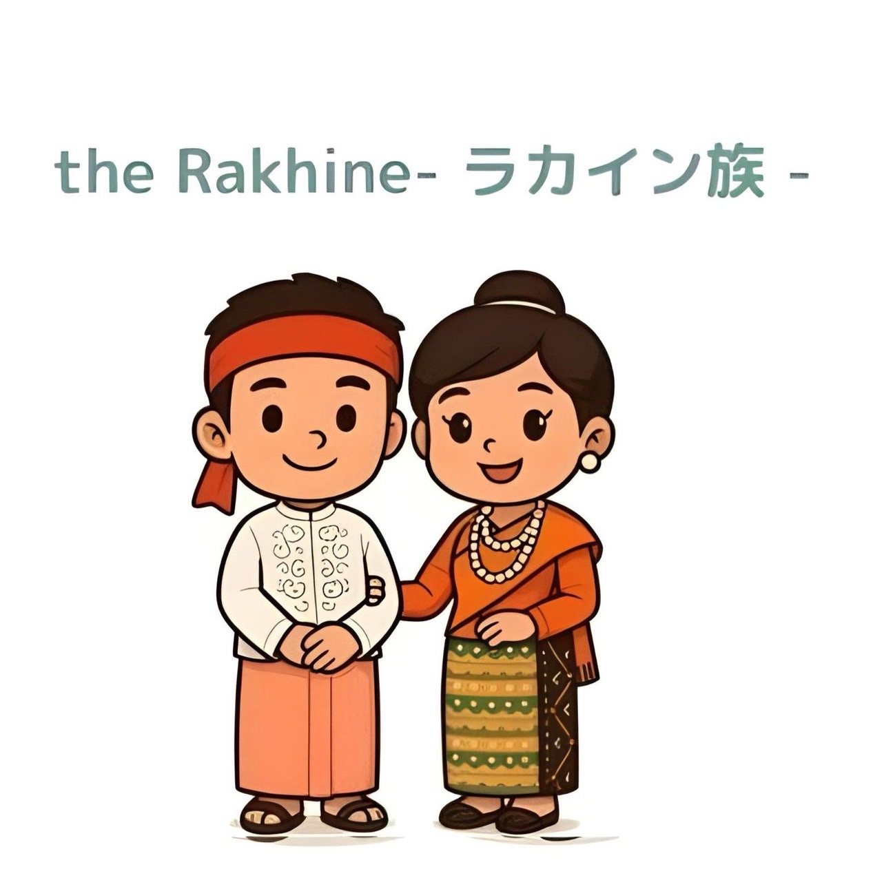
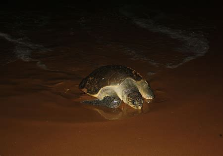

航海と工芸
ラカイン族の造船技術は有名であり、織物では独特の布地が作られています。
ラカイン族は、ミャンマー西部の沿岸地域であるラカイン州に居住しています。 彼らは航海の伝統、豊かな仏教文化遺産、そして独特の料理で知られています。

ラカイン族はビルマ族と近い関係にありますが、独自の言語と文化を持っています。 漁業、農業、そして貿易は彼らの生活において重要な役割を果たしています。
ラカイン族の伝統的な衣装は、男女ともに鮮やかなロンジーで構成されています。 男性は模様入りのロンジーにシンプルなシャツを合わせることが多く、 女性は体にフィットしたブラウスに明るい色や縞模様のロンジーを合わせ、 優雅で控えめなスタイルを表現しています。

ラカイン族の造船技術は有名であり、織物では独特の布地が作られています。
祭りは仏教の伝統と沿岸の生活を反映しています
白い砂浜と透き通った海で知られ、ミャンマーでも有名なビーチです。
要塞のような寺院が並ぶ古代都市です。
港町であり、活気ある市場や美しい海の景色で知られています。
ラカイン州の代表的な料理は、強い唐辛子の風味、新鮮な海産物、そして沿岸の食材で知られています。
ラカイン州の海岸や河川に生息する野生動物：
